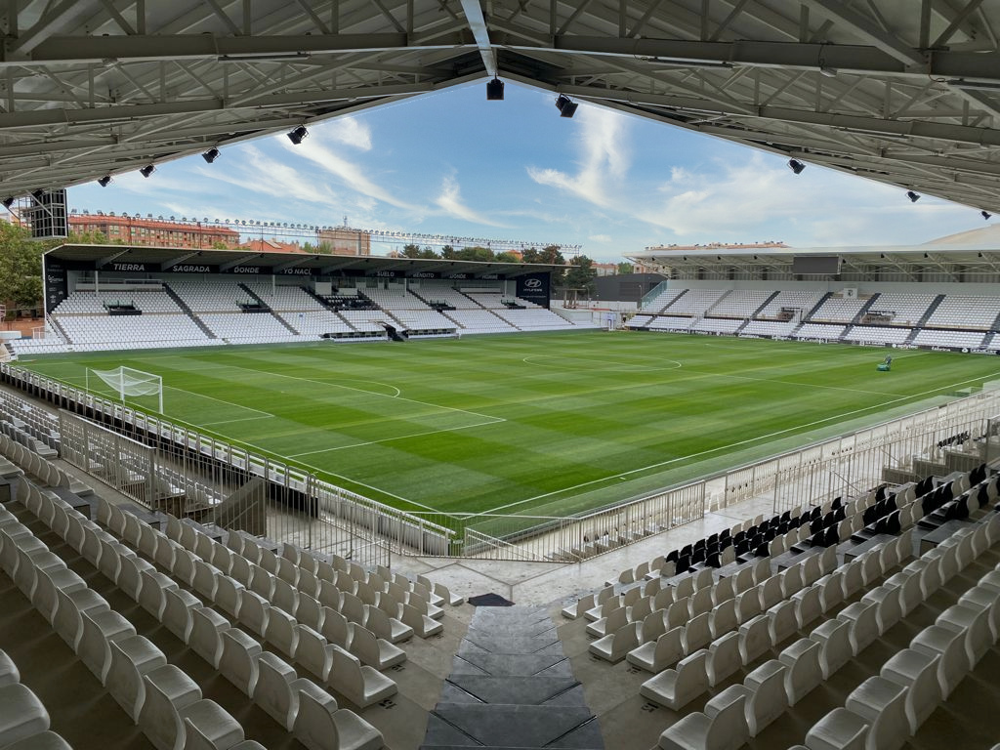

En el año 1947, la Gimnástica Burgalesa (Actual Burgos CF) pidió a Manuel Martínez que diseñara un escudo para el club. Manuel presentó varios diseños, pero el que convenció más, fue el escudo circular, con el estandarte blanquinegro sobre un fondo verde como el césped, también con un clásico balón de fútbol y con la corona del escudo de Castilla (La Corona es un elemento meramente decorativo).
El estadio del Burgos CF, llamado "El Plantío", se inició en forma de proyecto por el alcalde Honorato Martín-Cobos, y con José Luis Preciado como presidente del equipo. La construcción comenzó el 22 de junio de 1963. La construcción tardo únicamente quince meses y el arquitecto encargado del levantamiento del estadio fue Martín Tárrega.
El primer partido disputado en El Plantío fue contra la SD Indachu, el 13 de septiembre de 1964. El partido acabó 2-0 con victoria local. El primer jugador en anotar en El Plantío en un partido oficial fue Eduardo Pita Piñeiro, quien lo logró en el minuto 53 del primer partido de Segunda División de la campaña 64/65.
Fue en el año 1971 cuando en el Plantío se disputaba por primera vez un encuentro de la máxima categoría del fútbol español. Por ello, durante la década de los 70, el club levantó unas nuevas gradas para aumentar el aforo del estadio. A día de hoy, el club sigue mejorando las instalaciones de El Plantío.
